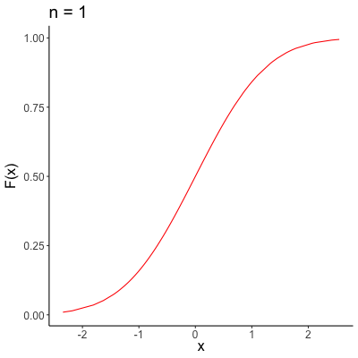

6 Asymptotics & the Central Limit Theorem
Asymptotic unbiasedness and consistency allow us to assess the behavior of estimators when sample sizes get large. Thus far, however, we’ve only discussed what happens to point estimates as \(n\) goes to infinity. Point estimates are great, but they don’t tell the whole story. In order to truly quantify uncertainty (which is arguably one of the main goals of statistics, if not the main goal), we need to be able to estimate a range of plausible values for our estimators: we need to be able to construct confidence intervals. This is made possible primarily by asymptotic normality, the Central Limit Theorem, and properties of the normal distribution.
Confidence Intervals
Confidence intervals are one of the most difficult concepts for a budding statistician to grasp, because they don’t have the intuitive, probabilistic definition we often want them to have (aka the probability that the truth lies within the interval). As with Frequentist statistics more generally, the definition of a confidence interval relies on the concept of repeated sampling from a population.
A confidence interval either contains the true parameter, or it does not. There is no probability involved in that statement. Probability comes into play when considering that, under repeated sampling, if we construct confidence intervals each time we take a new sample and construct an estimator, a given percentage of those intervals will contain the true parameter.
Confidence Intervals - The CLT
The primary way that we construct confidence intervals is by “rearranging” the CLT so that a quantity’s asymptotic distribution does not depend on the data nor the parameter of interest. This process is sometimes called establishing an approximate pivotal quantity.
As an example, consider an iid random sample \(X_1, \dots, X_n\) where \(E[X_i] = \mu\) and \(Var[X_i] = \sigma^2\), where \(\sigma^2\) is known. The CLT tells us that
\[ \sqrt{n}(\bar{X} - \mu) \overset{d}{\to} N(0, \sigma^2). \]
We can use this to construct a confidence interval for \(\mu\). By Slutsky’s theorem we can write
\[ \frac{\bar{X} - \mu}{\sigma/\sqrt{n}} \overset{d}{\to} N(0, 1). \]
and note now that we know the asymptotic distribution for the (pivotal) quantity on the left, and can therefore use the quantiles of this distribution to construct confidence intervals. For a standard normal distribution (as is the case here) we can note that 95% of the distribution is contained within 1.96 standard deviations of the mean, and therefore
\[ \Pr\left(-1.96 \leq \frac{\bar{X} - \mu}{\sigma/\sqrt{n}} \leq 1.96\right) = 0.95 \]
We can rearrange the probability statement on the left hand side to get
\[ \Pr\left(\bar{X}-1.96 \sigma/\sqrt{n} \leq \mu \leq \bar{X} + 1.96\sigma/\sqrt{n}\right) = 0.95 \]
and therefore, our 95% confidence interval for \(\mu\) is given by \(\left( \bar{X}-1.96 \sigma/\sqrt{n}, \bar{X}+1.96 \sigma/\sqrt{n} \right)\).
Confidence Intervals - “Exact”
A second way that we construct confidence intervals is through a concrete distributional assumption, and known quantiles of those distributions. Note that the confidence interval constructed above involves the Central Limit Theorem, and no finite sample distributional assumption. All we assume are that the data are iid observations with finite means and variances. The “distribution” only comes into play as our sample size gets large.
When sample sizes aren’t large, applying the CLT might not make a whole lot of sense. In these scenarios, it can be useful to use an alternative confidence interval construction, aided by assuming a specific distribution for our random variables. In some scenarios these assumptions may make more sense than others: in short, we’re always making some sort of assumption, regardless of what we do. It’s part of our job as statisticians to ensure that the assumptions we make, make sense for the application we’re working with!
One example of a commonly used “exact” confidence interval is the Clopper-Pearson interval for a binomial proportion. Consider an iid random sample \(X_1, \dots, X_n\), where \(\sum_{i = 1}^n X_i \sim Binomial(n, p)\). Intuitively, the interval is constructed by the following steps:
Find the largest p such that \(\Pr(X \leq k) \geq \alpha/2\), where \(k\) is the observed number of successes. Call this largest value \(p_U\).
Find the smallest p such that \(\Pr(X \geq k) \geq \alpha/2\), where \(k\) is again the observed number of successes. Call this smallest value \(p_L\).
Define the \(100(1 -\alpha)\)% confidence interval for \(p\) to be \((p_U, p_L)\).
This construction process allows us to determine all possible values of \(p\) that are compatible with our observed number of successes (which is exactly what a confidence interval should do).
In more math-y terms, We can show that if \(\sum_{i = 1}^n X_i \sim Binomial(n, p)\), then \(\Pr(\sum_{i = 1}^n X_i \geq x) = \Pr(Y \leq p)\), where \(Y \sim Beta(\sum_{i = 1}^n x_i, n - \sum_{i = 1}^n x_i + 1)\). The point of doing this is that we can rewrite our probability statements (involved in our confidence interval construction) in terms of a random variable that does not depend on \(p\). We can then compute the Clopper-Pearson interval for \(p\) as
\[ \Phi_{\frac{\alpha}{2}; x, n - x + 1} < p < \Phi_{1 - \frac{\alpha}{2}; x + 1, n - x} \]
where \(\Phi_{a; v, w}\) is the \(a\)th quantile from a Beta distribution with shape parameters \(v\) and \(w\). Alternatively, you can even write the Clopper-Pearson in terms of quantiles of the \(F\)-distribution, but the Beta format is enough to emphasize the main point: If we can determine the distribution of some function of our data and unknown parameter, and manipulate that distribution enough so that it depends on neither the data nor unknown parameter, we can use quantiles and probability statements to construct confidence intervals.
Convergence
If an estimator \(\hat{\theta}_n\) is a consistent estimator for \(\theta\), we also say that \(\hat{\theta}_n\) converges in probability to \(\theta\) (i.e., \(\hat{\theta}_n \overset{p}{\to} \theta\)). There are three different types of convergence: almost sure convergence, convergence in probability, and convergence in distribution (in order from “strongest” to “weakest”). The main two that we’ll care about for this course are convergence in probability and convergence in distribution. For our purposes, it will mostly suffice to know that (1) convergence in probability implies convergence in distribution, (2) the Central Limit Theorem, delta-method, and Slutsky’s Theorem are tools we can use to determine (and manipulate) asymptotic distributions of random variables, and (3) the Continuous Mapping Theorem (defined below). That being said, an attempt at an intuitive understand of these three types of convergence is provided below, in the context of sequences of random variables.
6.0.0.1 Convergence Almost Surely
Convergence almost surely is the strongest of the three types of convergence. A sequence of random variables \(X_1, \dots, X_n\) convergences almost surely (also called convergence almost everywhere) if
\[ \Pr(\lim_{n \to \infty} X_n = X) = 1 \]
In my opinion, one of the most intuitive explanations for convergence almost surely (and convergence in probability, comparatively) is given in the top answer to this StackExchange post. Convergence almost surely says that \(X_n\) will be equal to \(X\) at some point, for finite \(n\).
6.0.0.2 Convergence in Probability
Surprise! You already know this one, if you made it through the Consistency chapter. The concept of convergence in probability applies to sequences of random variables in addition to estimators. A sequence of random variables \(X_1, \dots, X_n\) converges in probability towards the random variable \(X\) if for all \(\epsilon > 0\)
\[ \lim_{n \to \infty} \Pr(|X_n - X | > \epsilon) = 0 \]
Note that this equivalent to saying that \(\lim_{n \to \infty} \Pr(|X_n - X | \leq \epsilon) = 1\), which looks a bit more like what we saw last chapter. Convergence in probability says that \(X_n\) will equal \(X\) with a very high probability as \(n\) gets large, though there will always be some small (shrinking with \(n\)) chance that they aren’t equal.
6.0.0.3 Convergence in Distribution
A sequence of random variables \(X_1, \dots, X_n\) with CDFs \(F_1, \dots, F_n\) converges in distribution (also called “weak” convergence, or convergence in “law”) if
\[ \lim_{n \to \infty} F_n(x) = F(x) \]for every number \(x\) at which \(F\) is continuous. Note that unlike convergence almost surely and convergence in probability, our sequence of variables isn’t “shrinking” in quite the same way, with this type of convergence. Rather, our sequence is better and better approximating an entire distribution, rather than focusing in on a single point. A visual representation of convergence in distribution is provided below, where \(F_n(x)\) is the black sequence of lines, and the red line is \(F(x)\).

Asymptotic Properties of MLEs
In addition to the nice intuition behind maximum likelihood estimation (finding the parameters that make our data the most likely to have occurred), most* MLEs also have incredibly convenient asymptotic properties, including:
Asymptotic unbiasedness
Consistency
Asymptotic normality
Asymptotic efficiency
The definitions of the latter two properties are included below (and the former in the previous chapters).
*the MLEs that do not have all of these properties are the ones that don’t have certain “regularity conditions.” For the MLEs we consider in this class, these are the MLEs that are on the boundary of the support of the pdf (such as the maximum or minimum order statistic).
6.1 Learning Objectives
By the end of this chapter, you should be able to…
Explain the usefulness of the Central Limit Theorem for Frequentist statistical theory
Manipulate asymptotic distributions to remove their dependence on unknown parameters using the delta-method and Slutsky’s theorem
- …and explain why such manipulation is important for confidence interval construction
Derive confidence intervals for unknown parameters based on asymptotic or exact distributions
6.2 Concept Questions
What feature of a confidence interval tells us about the precision of our estimator?
Why is “removing” unknown parameters from the asymptotic distribution of our estimators important when constructing confidence intervals?
6.3 Definitions
Asymptotic Normality
An estimator \(\hat{\theta}_n\) is asymptotically normal if \(\hat{\theta}_n\) converges in distribution to a normally distributed random variable.
Asymptotic Efficiency
An estimator \(\hat{\theta}_n\) is asymptotically efficient if it’s asymptotic variance attains the C-R Lower Bound. Note that this is the C-R Lower Bound for a single observation, and therefore the asymptotic distribution of an MLE looks something like this:
\[ \sqrt{n} (\hat{\theta}_n - \theta) \overset{d}{\to} N\left( 0, \frac{1}{I_1(\theta)}\right) \]
Confidence Interval
A 100(1 - \(\alpha\))% confidence interval for a parameter \(\theta\) is given by \((a, b)\), where \(\Pr(a \leq \theta \leq b) = 1 - \alpha\).
6.4 Theorems
Central Limit Theorem (CLT)
For iid random variables \(X_1, \dots, X_n\) with mean \(\mu\) and variance \(\sigma^2\),
\[ \sqrt{n} (\bar{X_n} - \mu) \overset{d}{\to} N(0, \sigma^2) \]
where “\(\overset{d}{\to}\)” denotes convergence in distribution.
Proof.
Note that this proof is not completely rigorous, in that we will use the following theorem (without proof) in order to prove the CLT:
Theorem: Let \(W_1, \dots, W_n\) be a sequence of random variables with MGF of the sequence \(W_n\) given by \(M_{W_n}(t)\). Also, let \(V\) denote another random variable with MGF \(M_V(t)\). Then if \(\underset{n \to \infty}{\text{lim}} M_{W_n}(t) = M_V(t)\), for all values of \(t\) in some interval around \(t = 0\), then the sequence \(W_1, \dots, W_n\) converges in distribution to \(V\).
Suppose \(X_1, \dots, X_n\) with mean \(\mu\) and variance \(\sigma^2\), and let \(Y_i = (X_i - \mu)/\sigma\). Then \(E[Y_i] = 0\), and \(Var[Y_i] = 1\) since
\[ E[Y_i] = E \left[ (X_i - \mu)/\sigma\right] = \frac{1}{\sigma} (E[X_i] - \mu) = \frac{1}{\sigma} (\mu - \mu) = 0 \]
and
\[ Var[Y_i] = Var\left[ (X_i - \mu)/\sigma\right] = \frac{1}{\sigma^2} Var[X_i - \mu] = \frac{1}{\sigma^2} Var[X_i] = \frac{\sigma^2}{\sigma^2} = 1 \]
Further, let
\[ Z_n = \frac{\sqrt{n}(\bar{X} - \mu)}{\sigma} = \frac{1}{\sqrt{n}} \sum_{i = 1}^n Y_i \]
where the last two terms are equal since
\[\begin{align*} \frac{1}{\sqrt{n}} \sum_{i = 1}^n Y_i & = \frac{1}{\sqrt{n}} \sum_{i = 1}^n \left( \frac{X_i - \mu}{\sigma}\right)\\ & = \frac{1}{\sigma\sqrt{n}} \sum_{i = 1}^n (X_i - \mu) \\ & = \frac{1}{\sigma\sqrt{n}} (n\bar{X} - n\mu) \\ & = \frac{\sqrt{n}(\bar{X} - \mu)}{\sigma} \end{align*}\]
We’ll show that \(Z_n \overset{d}{\to} N(0,1)\) by showing that the MGF of \(Z_n\) converges to the MGF of a standard normal distribution. Let \(M_Y(t)\) denote the MGF of each \(Y_i\). Then the MGF of \(\sum_{i = 1}^n Y_i\) is given by
\[ E[e^{t\sum_{i = 1}^n Y_i}] = E[e^{tY_1}e^{tY_2} \dots e^{tY_n}] = E[e^{tY_1}]E[e^{tY_2}] \dots E[e^{tY_n}] = M_Y(t)^n \]
and the MGF of \(Z_n\) is
\[ M_{Z_n}(t) = E[e^{tZ_n}] = E[e^{t\frac{1}{\sqrt{n}}\sum_{i = 1}^n Y_i}] = M_Y\left(\frac{t}{\sqrt{n}}\right)^n \]
Now note that the Taylor expansion of the function \(e^{tY}\) about \(0\) is given by
\[ e^{tY} = 1 + tY + \frac{t^2Y^2}{2!} + \frac{t^3Y^3}{3!} + \dots \]
Taking the expectation of both sides, we obtain
\[ E[e^{tY}] = 1 + tE[Y] + \frac{t^2E[Y^2]}{2!} + \frac{t^3E[Y^3]}{3!} + \dots \]
and note now that the left hand side is the MGF for \(Y\). Recalling that \(E[Y] = 0\) and \(Var[Y] = 1\), we have
\[ E[e^{tY}] = 1 + \frac{t^2}{2!} + \frac{t^3E[Y^3]}{3!} + \dots \]
And therefore
\[ E[e^{tZ_n}] = \left[1 + \frac{t^2}{2n} + \frac{t^3E[Y^3]}{3!n^{3/2}} + \dots \right]^n \]
We’ll now make use of a theorem regarding sequences of real numbers (without proof): Let \(a_n\) and \(c_n\) be sequences of real numbers such that \(a_n \overset{n \to \infty}{\to} 0\) and \(c_na_n^2 \overset{n \to \infty}{\to} 0\). Then if \(a_nc_n \overset{n \to \infty}{\to} b\), \((1 + a_n)^{c_n} \overset{n \to \infty}{\to} e^b\).
Let \(a_n = \frac{t^2}{2n} + \frac{t^3E[Y^3]}{3!n^{3/2}} + \dots\) and \(c_n = n\). Note that both \(a_n \overset{n \to \infty}{\to} 0\) and \(c_na_n^2 \overset{n \to \infty}{\to} 0\). Then
\[ \underset{n \to \infty}{\text{lim}} a_n c_n = \underset{n \to \infty}{\text{lim}} \left[ \frac{t^2}{2} + \frac{t^3E[Y^3]}{3!n^{1/2}} + \dots\right] = \frac{t^2}{2} \]
and therefore
\[ M_{Z_n}(t) = (1 + a_n)^{c_n} \overset{n \to \infty}{\to} e^{t^2/2} \]
where we note that the right hand side is the MGF of a standard normal distribution. Then finally, we have proved that
\[ \sqrt{n}(\bar{X} - \mu) \overset{d}{\to} N(0, \sigma^2) \]
as desired.
Continuous Mapping Theorem
If \(X_n \overset{p}{\to} X\), and \(g\) is a continuous function, then \(g(X_n) \overset{p}{\to} g(X)\). Similarly for convergence almost surely and convergence in distribution.
Proof.
Left to the reader, but also on Wikipedia.
Slutsky’s Theorem
If \(g(X, Y)\) is a jointly continuous function at every point \((X, a)\) for some fixed \(a\), and if \(X_n \overset{d}{\to} X\) and \(Y_n \overset{p}{\to} a\), then \(g(X_n, Y_n) \overset{d}{\to} g(X, a)\).
Proof.
Beyond the scope of the course, unfortunately, but here’s a link to the Wikipedia page if you want to go down that rabbit hole in your spare time.
Delta-method
Let \(\sqrt{n} (Y - \mu) \overset{d}{\to} N(0, \sigma^2)\). If \(g(Y)\) is differentiable at \(\mu\) and \(g'(\mu) \neq 0\), then
\[ \sqrt{n} \left( g(Y) - g(\mu)\right) \overset{d}{\to} N(0, [g'(\mu)]^2 \sigma^2) \]
Proof.
Since \(g\) is differentiable at \(\mu\), it’s first-order Taylor expansion is given by
\[ g(Y) = g(\mu) + (Y - \mu)g'(\mu) + O(| Y - \mu |^2) \]
where \(O(f(x))\), referred to as “Big O,” describes the limiting behavior of the function \(f(x)\). In this case, we use it to note that every term in the Taylor expansion after the first derivative evaluated at \(\mu\) is growing no faster than \(|Y - \mu|^2\) as \(n \to \infty\).
Rearranging, note that
\[ g(Y) - g(\mu) = (Y - \mu)g'(\mu) + O(| Y - \mu |^2) \]
and so
\[\begin{align*} \sqrt{n}\left( g(Y) - g(\mu) \right) = \sqrt{n}(Y - \mu) g'(\mu) + O(\sqrt{n} |Y - \mu|^2) \end{align*}\]
Then note that \(\sqrt{n}(Y - \mu) \overset{d}{\to} N(0, \sigma^2)\), \(g'(\mu) \overset{p}{\to} g'(\mu)\) since it’s just a constant, and \(O(\sqrt{n} |Y - \mu|^2) \overset{p}{\to} 0\) (due to the \(\sqrt{n}\) term). Then using two applications of Slutsky’s theorem, we can write that
\[ \sqrt{n}(Y - \mu)g'(\mu) \overset{d}{\to} N(0, \sigma^2)g'(\mu) = \overset{d}{\to} N(0, [g'(\mu)]^2\sigma^2) \] and
\[\begin{align*} \sqrt{n}(Y - \mu)g'(\mu) + O(\sqrt{n} |Y - \mu|^2) & \overset{d}{\to} N(0, \sigma^2)g'(\mu) + 0\\ & \overset{d}{=} N(0, [g'(\mu)]^2\sigma^2) \end{align*}\]
and so finally we have shown that \[ \sqrt{n}\left( g(Y) - g(\mu) \right) \overset{d}{\to} N(0, [g'(\mu)]^2\sigma^2) \] as desired.
6.5 Worked Examples
Problem 1: Suppose \(\sqrt{n}(Y_n - \mu) \overset{d}{\to} N(0, \sigma^2)\). Find the asymptotic distribution of \(\sqrt{n}(Y_n^2 - \mu^2)\) when \(\mu \neq 0\).
Solution:
We can apply the delta-method with the function \(g(x) = x^2\). Note that \(g'(x) = 2x\), and therefore we can write
\[\begin{align*} \sqrt{n}(Y_n - \mu) & \overset{d}{\to} N(0, \sigma^2) \\ \sqrt{n}(g(Y_n) - g(\mu)) & \overset{d}{\to} N(0, [g'(\mu)]^2\sigma^2) \\ \sqrt{n}(Y_n^2 - \mu^2) & \overset{d}{\to} N(0, [2\mu]^2\sigma^2) \\ \sqrt{n}(Y_n^2 - \mu^2) & \overset{d}{\to} N(0, 4 \mu^2\sigma^2) \end{align*}\]
Problem 2: Suppose \(X_1, \dots, X_n \overset{iid}{\sim} Bernoulli(p)\), and recall that the MLE for \(p\) is given by \(\hat{p}_{MLE} = \frac{1}{n} \sum_{i = 1}^n X_i\). Find the asymptotic distribution of \(\hat{p}_{MLE}\) using the CLT and known properties of the Bernoulli distribution (expectation and variance, for example), and construct a 95% confidence interval for \(p\) based on this asymptotic distribution.
Solution:
We know that \(E[X_i] = p\) and \(Var[X_i] = p(1-p)\). Then the CLT tell us that
\[ \sqrt{n}(\hat{p}_{MLE} - p) \overset{d}{\to} N(0, p(1-p)) \]
The WLLN gives us that \(\hat{p}_{MLE} \overset{p}{\to} p\), since \(\hat{p}_{MLE}\) is a sample mean. We can then use the continuous mapping theorem to show that \(\frac{1}{\sqrt{\hat{p}_{MLE}(1-\hat{p}_{MLE})}} \overset{p}{\to} \frac{1}{\sqrt{p(1 - p)}}\). Applying Slutsky’s theorem, we then have
\[ \sqrt{n}\left(\frac{\hat{p}_{MLE} - p}{\sqrt{\hat{p}_{MLE}(1-\hat{p}_{MLE})}}\right) \overset{d}{\to} N(0, 1) \]
and finally, (letting \(\hat{p} = \hat{p}_{MLE}\) for ease of notation)
\[\begin{align*} 0.95 & = \Pr\left(-1.96 < \frac{\hat{p} - p}{\sqrt{\hat{p}(1-\hat{p})/n}} < 1.96\right) \\ & = \Pr\left(-1.96\sqrt{\hat{p}(1-\hat{p})/n} < \hat{p} - p < 1.96\sqrt{\hat{p}(1-\hat{p})/n}\right) \\ & = \Pr\left(\hat{p} -1.96\sqrt{\hat{p}(1-\hat{p})/n} < p < \hat{p} + 1.96\sqrt{\hat{p}(1-\hat{p})/n}\right) \end{align*}\]